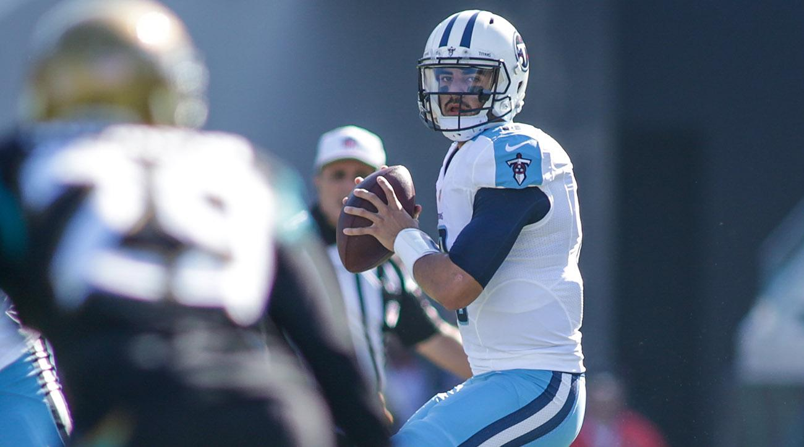

Overview
Understanding a new concept is all about connecting it with something you already know. I don’t know much, but I do know Fantasy Football. Thus, when I come across new concepts, I often think to myself, “How can I use this information to beat my friend Steve in Fantasy Football”? This very question was the impetus for putting these words and figures together in a post, which will introduce the idea of using the Beta Distribution to determine your weekly starter. I’ll explain this approach in the context of my 2015 Fantasy Football season.
At the outset of that season, I drafted two quarterbacks: Joe Flacco and Marcus Mariota (it was a rough draft). Flacco had been in the NFL for a few years, while Mariota was still a rookie yet to play a game. I was also considering a separate rookie, Jameis Winston, who was available to pick up anytime during the season off the waiver wire. Throughout the season, I was faced with the following questions:
- Who do I make the starting QB?
- If one QB is performing poorly, when is the right time to make the switch (e.g., Flacco -> Mariota; Flacco -> Winston; Mariota -> Winston)?
This question is faced by NFL coaches and fantasy owners alike. If your QB has a few bad weeks, should you continue with them into the next week, replace them with the 2nd string QB, or sign a free agent to your team mid-season?
Before getting into the technical details, let’s first define what “Success” looks like for a Fantasy Football QB. Success can be defined in one word: Consistency. A QB that throws three touchdowns (TDs) every game for the first six games of the season (18 total) is better than a QB who throws five TDs for the first three games and then one TD during the next three games, despite having thrown the same number of TDs. Simply put - you want consistent, reliable performance every week. It doesn’t matter if you win by one point or 50 points – a win is a win. Thus, I evaluate my QB’s performance on the following criteria: A “Successful” performance is defined as 3 or more touchdowns AND/OR 300 or more yards for a given week. Touchdowns and passing yards are the two primary sources of QB fantasy points, and a +3TD|300yard weekly statline should cement a QB amongst that week’s top performers. Failing to meet either of these criteria was defined as an “Unsuccessful” performance. Note that this label could also factor in interceptions, pass completions, and fumble, but we’ll keep it simple and just focus on passing yards and passing touchdowns.
Having defined the evaluation criteria, the data generating process was modeled via the beta distribution. Recall that the beta distribution defines a distribution of probabilities, and we’re interested in the probability of our QB having a Successful week. There are several years of performance history on Joe Flacco, so we can provide a reasonably informed estimate of his weekly probabilty for achieving success (i.e., our prior). In contrast, there is no NFL game history on Mariota or Winston, so we’ll assign each a uniform or uninformative prior. Our estimate of the Success parameter for Winston and Mariota will change rapidly as we acquire in-season data because our posterior is determined entirely from the data. We could create a more informed-–and stronger-–prior by assigning Mariota and Winston the historic first-year league average for all rookie QBs entering the NFL but we’ll keep it simple. A uniform prior means that all probabilities from 0-1 are equally likely.
Collecting QB Data
We’ll use the nflgame python package to gather QB data. We’ll pull 2013-2014 weekly performance data for Joe Flacco to calculate our prior, as well as the 2015 data for all three players. During the season we’ll update our priors to determine which QB we should play for a given week. That is, as we acquire results over the season, updates will be made to obtain a better, more reliable estimate of the “success” parameter for each QB.
import nflgame
import pandas as pd
game_years = range(2013, 2016)
game_weeks = range(1, 17)
qbs = ("Joe Flacco",
"Marcus Mariota",
"Jameis Winston")
def get_passing_data(year, week, players, qbs):
qb_list = list()
for p in players.passing():
player = " ".join(str(p.player).split(" ")[:2])
if player in qbs:
qb_list.append([year, week, player, p.passing_tds, p.passing_yds])
return qb_list
quarterback_data = pd.DataFrame()
for year in game_years:
print "Retrieving Player Data for {year}".format(year = year)
for week in game_weeks:
games = nflgame.games(year, week)
players = nflgame.combine_game_stats(games)
temp_qb_stats = get_passing_data(year, week, players, qbs)
quarterback_data = quarterback_data.append(pd.DataFrame(temp_qb_stats))
quarterback_data.columns = ["year", "week", "player", "touchdowns", "passing_yds"]
quarterback_data.to_csv("quarterback_data.csv", index = False)Next let’s read the quarterback_data.csv into R, create a plotting function, and examine the first few rows of data.
my_plot_theme = function(){
font_family = "Helvetica"
font_face = "bold"
return(theme(
axis.text.x = element_text(size = 18, face = font_face, family = font_family),
axis.text.y = element_text(size = 18, face = font_face, family = font_family),
axis.title.x = element_text(size = 20, face = font_face, family = font_family),
axis.title.y = element_text(size = 20, face = font_face, family = font_family),
strip.text.y = element_text(size = 18, face = font_face, family = font_family),
plot.title = element_text(size = 18, face = font_face, family = font_family),
legend.position = "top",
legend.title = element_text(size = 16,
face = font_face,
family = font_family),
legend.text = element_text(size = 14,
face = font_face,
family = font_family)
))
}
# custom plotting colors
my_color_theme = c("#272822", "#F92672","#66D9EF","#A6E22E", "#A6E22E", "#F92672")
libs = c('dplyr', 'zeallot', 'janitor',
'reshape', 'readr','artyfarty',
'knitr', 'ggplot2', 'kableExtra')
lapply(libs, require, character.only = TRUE)
working_dir = 'your_wd_here'
player_data = 'quarterback_data.csv'
# define success metrics
n_touchdowns = 3
n_passing_yds = 300
qb_df = read_csv(file.path(working_dir, player_data)) %>%
mutate(success = ifelse(touchdowns >= n_touchdowns | passing_yds >= n_passing_yds,
1, 0))| year | week | player | touchdowns | passing_yds | success |
|---|---|---|---|---|---|
| 2013 | 1 | Joe Flacco | 2 | 362 | 1 |
| 2013 | 2 | Joe Flacco | 1 | 211 | 0 |
| 2013 | 3 | Joe Flacco | 0 | 171 | 0 |
| 2013 | 4 | Joe Flacco | 2 | 347 | 1 |
| 2013 | 5 | Joe Flacco | 0 | 269 | 0 |
| 2013 | 6 | Joe Flacco | 2 | 342 | 1 |
| 2013 | 7 | Joe Flacco | 1 | 215 | 0 |
| 2013 | 9 | Joe Flacco | 2 | 250 | 0 |
| 2013 | 10 | Joe Flacco | 2 | 140 | 0 |
| 2013 | 11 | Joe Flacco | 1 | 162 | 0 |
| 2013 | 12 | Joe Flacco | 1 | 273 | 0 |
| 2013 | 13 | Joe Flacco | 1 | 251 | 0 |
| 2013 | 14 | Joe Flacco | 3 | 245 | 1 |
| 2013 | 15 | Joe Flacco | 0 | 222 | 0 |
| 2013 | 16 | Joe Flacco | 0 | 260 | 0 |
| 2014 | 1 | Joe Flacco | 1 | 345 | 1 |
| 2014 | 2 | Joe Flacco | 2 | 166 | 0 |
| 2014 | 3 | Joe Flacco | 1 | 217 | 0 |
| 2014 | 4 | Joe Flacco | 3 | 327 | 1 |
| 2014 | 5 | Joe Flacco | 0 | 235 | 0 |
| 2014 | 6 | Joe Flacco | 5 | 306 | 1 |
| 2014 | 7 | Joe Flacco | 2 | 258 | 0 |
| 2014 | 8 | Joe Flacco | 0 | 195 | 0 |
| 2014 | 9 | Joe Flacco | 2 | 303 | 1 |
| 2014 | 10 | Joe Flacco | 1 | 169 | 0 |
We now have all the data to get started.
Modeling QB Performance with the Beta Distribution
The Beta Distribution is used to model processes involving successes/failure, purchase/non-purchase, clicks/non-clicks – basically any process where there are two potential outcomes, and we’re interested in the probability of one of those outcomes occurring. It is defined with two parameters – alpha (the number of successes) and beta (the number of failures). We’ll calculate Flacco’s prior based on the 2013-2014 season performance. He played a total of 30 games during this time, and he threw 3TDs|300yards in eight of those weeks. Accordingly, Flacco’s alpha and beta are 8 and 22, respectively. Mariota and Winston have no history, so their alpha and beta will be 1 and 1.
# this will hold the data we'll update
flacco_prior = qb_df %>%
filter(player == 'Joe Flacco' & year < 2015)
c(flacco_beta, flacco_alpha) %<-% unname(table(flacco_prior$success))
c(mariota_beta, mariota_alpha) %<-% c(1, 1)
c(winston_beta, winston_alpha) %<-% c(1, 1)
# define priors
players_list = list()
# players_list_reference stores posterior distribution after each week
players_list_reference = list()
players_list[['Joe Flacco']] = c(flacco_alpha, flacco_beta)
players_list[['Marcus Mariota']] = c(mariota_alpha, mariota_beta)
players_list[['Jameis Winston']] = c(mariota_alpha, mariota_beta)Let’s filter the data to the current season and iterate through each week. The alpha or beta parameter is incremented by one, depending on whether the quarterback achieved success for that week, via the update_player_beta function below.
update_player_beta = function(players_list, current_week, stat_field){
for(temp_player in names(players_list)){
player_stats = current_week %>%
filter(player == temp_player) %>%
select(stat_field)
if(nrow(player_stats) == 0){
next
}
if(player_stats == 1){
players_list[[temp_player]][1] = players_list[[temp_player]][1] + 1
} else {
players_list[[temp_player]][2] = players_list[[temp_player]][2] + 1
}
}
return(players_list)
}We’ll also calculate the density of each player’s distribution for every value from 0 - 1. This indicates the likelihood of each player achieving success for a given week. For example, a mean of 0.4 would indicate that there’s a 40 percent chance that, after accounting for historical performance, a QB will throw +3TDs|300yards in the following week. We aren’t considering the uncertainty surrounding the estimate of our mean yet, but we’ll tackle that issue in a second. The format_posterior function below will help transform the data into a format amenable to plotting.
format_posterior = function(players_list){
posterior = lapply(players_list, function(x) dbeta(seq(0,
1,
by = 0.01),
x[1],
x[2])) %>%
data.frame() %>%
mutate(x = seq(0, 1, by = 0.01)) %>%
select(x, 1:(length(players_list))) %>%
reshape::melt(id.vars = "x") %>%
dplyr::rename(player = variable,
density = value) %>%
mutate(weeks_elapsed = i)
return(posterior)
}current_season = qb_df %>%
filter(year == 2015) %>%
select(year, week) %>%
distinct()
beta_evolution_df = data.frame(NULL)
for(i in 1:nrow(current_season)){
c(cur_year, cur_week) %<-% current_season[i,]
current_week = qb_df %>%
filter(year == cur_year,
week == cur_week)
players_list = update_player_beta(players_list,
current_week,
'success')
players_list_reference[[i]] = players_list
posterior = format_posterior(players_list)
beta_evolution_df = bind_rows(beta_evolution_df,
posterior)
}
beta_evolution_df = beta_evolution_df %>%
mutate(player = gsub("\\.", " ", player))Let’s examine how our estimates for each player change as the season unfolds. I’ve plotted this process by storing the Probability Density Functions (PDFs) following each week (a total of 16 games) during the regular season.
ggplot(beta_evolution_df, aes(x, density, color = player)) +
geom_line(size = 2) +
facet_wrap(~weeks_elapsed) +
theme_bw() +
my_plot_theme() +
scale_color_manual(values = c(my_color_theme[1:3])) +
theme(legend.title=element_blank(),
axis.text.x = element_text(size = 10)
) +
ylab("Density")
By the end of the season, it looks like Mariota would’ve been the correct choice, even though there is a fair amount of overlap between the distributions. However, knowing this at Week 16 isn’t helpful – the fantasy season is over. Let’s say we started the veteran QB Joe Flacco for Week 1, and Week 2 we decided to use some maths to help us choose between our three QBs. There are two related approaches we could use to address this question:
- Upper Confidence Bound
- Simulation
I’ll outline both in further detail below.
Decisions based on the Upper Confidence Bound
The Upper Confidence Bound algorithm is one way to make decisions in the face of uncertainty, in this case, which quarterback to fire up in our lineup each week. The idea is to choose the option with the greatest potential for a favorable outcome, even if our estimate of the probability of that outcome is uncertain (see here for more detail). We’ll calculate a 90% credible interval for our beta parameter each week. A credible interval is like a confidence interval, but the interpretation is a bit different and, in my opinion, easier to understand. In the current context, a 90% credible interval is the range of values in which we are 90% certain that the probability of weekly success falls based on the data we have thus far (see here for an excellent explanation on the distinction between confidence and credible intervals).
Taking these concepts together, we’ll choose the QB in Week 2 with the highest upper bound on their credible interval. I’ll also include an additional five weeks to show how the interval evolves as we obtain more information.
credible_intervals = data.frame(NULL)
for(week in 2:length(players_list_reference)){
temp_week = players_list_reference[[week]]
for(player in names(temp_week)){
temp_player = temp_week[[player]]
lower_cred_int = qbeta(0.05,temp_player[1], temp_player[2])
upper_cred_int = qbeta(0.95,temp_player[1], temp_player[2])
alpha = temp_player[1]
beta = temp_player[2]
credible_intervals = bind_rows(credible_intervals,
data.frame(player = player,
week = week,
lower = lower_cred_int,
mean = alpha/(alpha + beta),
upper = upper_cred_int))
}
}ggplot(credible_intervals %>% filter(week < 11),
aes(x = mean, y = player, color = player)) +
geom_point(size = 3) +
geom_errorbarh(aes(xmin = lower,
xmax = upper),
size = 2) +
xlab("Chance of Achieving +300yds | +3TDs During Week") +
theme_bw() +
my_plot_theme() +
scale_color_manual(values = c(my_color_theme[1:3])) +
facet_grid(week ~.) +
theme(axis.text.y = element_blank(),
axis.title.y = element_blank(),
legend.position = "top",
legend.title = element_blank())
Mariota has the largest upper bound for his credible interval, so we should start Mariota during Week 2 and continue starting him as a quarterback until another QB’s upper bound is greater than his. Note also that Flacco’s interval is both narrower and remains relatively unchanged over the six week period. This is because we have a lot more information on Flacco going into the season – that is, our prior is a lot stronger! A few successful or unsuccessful games during the season wont shift Flacco’s interval much. We already have two seasons worth of data indicating that Flacco’s probability of success hovers somewhere around 30% but is likely not higher than 40% or lower than 20%. In contrast, Marriota’s credible interval changes rapidly from one week to the next. By Week 7, Mariota’s interval drifts toward a more reasonable range (0.15 - 0.70), a process known formally as shrinkage.
The Upper Bound approach is an easy way to choose a QB. But what if we wanted a specific estimate of the probability that one QB was “better” than the other? For that question, we’ll turn to simulation.
Decisions Based on Simulation
Let’s keep this simple and compare Flacco vs. Mariota following Week 2. Our goal is to determine the probability that one QB, or, more formally, their beta distribution, is greater/better than the other, according to our criteria for success. We’ll simulate 1000 draws from the posterior distribution of each week via the simulate_weeks function, then compare the number of instances in which Mariota’s sampled beta was greater than Flacco’s.
simulate_weeks = function(player_1, player_2, n_simulations, players_list_reference){
simulated_outcome = data.frame(NULL)
set.seed(123)
for(reference_week in 1:length(players_list_reference)){
player1_simulation = rbeta(n_simulations,
players_list_reference[[reference_week]][player_1][[1]][1],
players_list_reference[[reference_week]][player_1][[1]][2])
player2_simulation = rbeta(n_simulations,
players_list_reference[[reference_week]][player_2][[1]][1],
players_list_reference[[reference_week]][player_2][[1]][2])
player1_v_player2 = mean(player1_simulation > player2_simulation)
simulated_outcome = bind_rows(simulated_outcome,
data.frame(weeks_elapsed = reference_week,
player = c(player_1, player_2),
simulations_won = c(player1_v_player2,
1 - player1_v_player2)
))
}
return(simulated_outcome)
}player_1 = "Marcus Mariota"
player_2 = "Joe Flacco"
n_simulations = 1000
simulated_outcome = simulate_weeks(player_1,
player_2,
n_simulations,
players_list_reference)ggplot(simulated_outcome, aes(x = weeks_elapsed, y = simulations_won,
color = player)) +
scale_x_continuous(breaks = seq(0, 20, 5)) +
xlab("N Weeks Elapsed") +
ylab("Simulations Won") +
geom_point(size = 2) + geom_line(size = 2) +
theme_bw() +
my_plot_theme() +
scale_color_manual(values = c(my_color_theme[c(1, 3)])) +
theme(legend.title=element_blank()) +
scale_x_continuous(breaks = seq(1, 16))
From Week 2 there is a ~80% chance that Mariota is the better choice relative to Flacco. By Week 7 there is ~75% chance, and by Week 12 there is a ~79% chance. If someone asked you at the end of the season who was the better quarterback, you could say with about 75% certainty that Mariota was better than Flacco, according to the criteria defined here.
Key Takeaways
As mentioned above, this system has worked well for me over the past few seasons. It does have some obvious shortcomings, namely that it doesn’t account for the strength of an opposing defense, health of receivers, recent performance, or the Over/Under for the game – all factors that should be considered when selecting a weekly QB. However, this approach provides an objective way to quantify the potential of a QB to deliver a solid weekly performance.